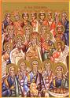

A Nação de Israel
Ao longo do livro do Deuteronômio, Deus deu instruções a seu povo sobre como se comportar quando chegaram em Canaã, a terra que Deus havia prometido a Abraão. Estas instruções ainda incluiram o tipo de governo que deve crear. Em primeiro lugar, que seria governado por um número de juízes (daí o livro de Juízes). Então, em Deuteronômio 17:14-15, Deus disse aos israelitas que os reis deveriam governar o povo, mas somente os reis que foram especificamente escolhido (ungido) por Deus.
Embora Saul, o primeiro rei de Israel, foi nomeado por Deus, foi ele que acabou desobediente e sua fé era muito fraco. Deus não continuou o Estado de Israel através da linha de Saul (o filho de Saul, Jônatas, não sucedê-lo como rei).
Os oito primeiros livros da Bíblia, Gênesis até Rute, relacionam os acontecimentos no início da história em ordem cronológica (a ordem em que eles ocorreram). A história da nação de Israel foi contada em uma série de livros do Velho Testamento, mas não em ordem cronológica. Para fazer mais sentido do que aconteceu com quem e quando, é útil para encontrar um livro de referência que fornece um cronograma de como desenrolar os acontecimentos e onde essas histórias podem ser encontrados no Velho Testamento. Aqui está uma tabela muito abreviada dos reis que reinaram em Israel e onde suas histórias podem ser encontrados no Velho Testamento:
| Data da Aproximação | Rei | Livros Velho Testamento |
| 1050 aC | Saul | I Samuel, I Crônicas |
| 1010 aC | Davi | II Samuel, I Crônicas (A Maioria Dos Salmos Escritos) |
| 970 aC | Salomão | I Reis, II Crônicas (Cânticos, Eclesiastes, Provérbios) |
| 925 aC - 722 aC | Israel Se Divide Em Dois Reinos – Muitos Reis Para Ambos | I Reis, II Reis, II Crônicas (Provérbios) |
Rei Davi
O homem que se tornaria o próximo, e talvez o maior, rei de Israel veio de uma fonte improvável. Davi era o filho caçula (não o mais velho, como de costume) de um homem que viveu em uma cidade muito remota chamada Belém. (Isso soa familiar?) Seria partir da linha de Davi (seu descendentes) que Jesus Cristo teria nasceria!
Tal como com todas as pessoas Deus tinha escolhido para ajudar a realizar Sua vontade no mundo, Davi não era perfeito. Ele cometeu pecados graves na sea época como rei. No entanto, Deus disse ao profeta Samuel que Davi era um homem segundo o coração de Deus.

Um Nação Desobediente
O filho de Davi, Salomão, sucedeu-lhe como rei. Salomão é conhecido por ser muito inteligente e aprendido. É também o rei que levou Israel para completar a construção da magnífica templo projetada por seu pai Davi. Salomão é creditado como o escritor, de pelo menos, dois livros do Velho Testamento: Cânticos (um poema de amor!) e Eclesiastes.
Se você lembrar dos Dez Mandamentos, o primeiro e mais importante de Deus para o Seu povo é que eles NÃO têm outros deuses. Infelizmente, Israel estava cercado por tribos e nações que adoravam vários deuses e ídolos. Salomão trouxe muitos desses estrangeiros de Israel para ajudar a construir o templo; esses trabalhadores trouxeram seus ídolos com eles. Como todos nós sabemos em nossas próprias vidas, é difícil de ser constantemente em torno de pessoas que não são como nós, e acreditam que diferentemente do que nós fazemos, e não começar a ter algumas de suas crenças e práticas. Isto é o que aconteceu com a nação de Israel.
Enquanto Salomão foi um grande rei de muitas maneiras, seu governo foi por vezes muito áspero. Ele impôs pesados impostos sobre o povo dele para construir o templo, assim como um luxuoso palácio para si mesmo. Esta, entre outras coisas, provocou a nação de Israel a dividir-se em dois reinos (Judá, no sul, Israel, no norte).

Deus Envia Avisos Através Dos Profetas
A nação de Israel tinha sido escolhido por Deus para ser Seu povo, mas uma e outra vez, os judeus estariam desobedecendo a Deus através adoração de ídolos das pessoas que vivem em torno deles. Muitas vezes, essa idolatria envolvidos práticas tal como o sacrifício de crianças e imoralidade sexual que Deus não pode tolerar a partir de seu povo.
Outra vez, Deus enviou profetas ao poro paradverti-los que havia consequencias graves por causa da sua desobediência. A seção final del Velho Testamento registra as palavras que Deus inspirou o Seus profetas a dizar. Cada previsão que Deus enviou aos Seus profetas sobre a derrota e o exílio de Israel chegou a passar.
Para ver a ordem das escrituras dos profetas, podemos bota-los em uma gráfica igual a que fizemos com os reis de Israel. As coisas que estavam acontencendo durante os tempos de 1 e 2 Samuel, 1 e 2 Reis, e 1 e 2 Crônicas são as mismas que os profetas estavam advertindo o povo de Israel sobre.
| Data da Aproximação | Profeta | Livros del Velho Testamento |
| 840 aC | Obadias | I and II Reis |
| 835 aC | Joel | II Reis, II Crônicas |
| 760 aC | Jonas | II Reis, II Crônicas |
| 740 aC | Amós | II Reis, II Crônicas |
| 730 aC | Oséias | II Reis, II Crônicas |
| 722 aC Israel Para a Assíria Cai Judeus Do Norte No Exilio | II Reis, II Crônicas | |
| 705 aC | Miqueas, Isaías | II Reis, II Crônicas |
| 640 aC | Naum, Sofonias | II Reis, II Crônicas |
| 620 aC | Habacuque | II Reis, II Crônicas |
| 620 aC | Jeremias | II Reis, II Crônicas |
| 605 aC Judá Caídas a Babilonia, Judeus do Sul no Exílio | Jeremias | Lamentações (Escrito no Exílio) |
| 600 aC | Obadias | II Reis, II Crônicas |
| 590 aC | Ezequiel, Daniel | Lamentações (Escrito En el Exilio) |
| 538 aC Judeus São Autorizados Para Petornar a Israel | Ageu, Zacarias | Esdras |
| 450 aC | Malaquias | Ester, Esdras, Neemias |
Uma Nação Derrotada
Os três últimos livros do Velho Testamento, Ageu, Zacarias e Malaquias, foram escritas para encorajar o povo judeu para reavivar sua fé antiga em Deus e tornar-se fiel novamente em sua adoração a Ele (Judaísmo).
Depois de várias tentativas frustradas, eles ainda eram capazes de construir um novo templo. Era apenas uma sombra do templo da antiga glória construído durante o reinado do rei Salomão, mas mesmo assim, era um lugar em sua terra natal, onde eles poderiam finalmente a adorar o único Deus verdadeiro novamente.
E mesmo que os profetas previram a queda de Israel, suas previsões foram misturadas com as profecias sobre um salvador, um Messias que viria a formar uma nova aliança entre Deus e o Seu povo. (Isaías 53, 55)
Deus pediu a um povo derrotado a ter fé que, mesmo quando as coisas pareciam sombrias, o futuro ainda estava em Suas mãos e Ele ainda ansiava por ter um relacionamento com a humanidade, Sua maior criação.

Judaísmo (Adoração a Deus) Após o Exílio
A religião judaica sempre entragaram a Deus sacrifícios de animais para o perdão dos seus pecados. Lembre-se que Deus disse a Adão e Eva que eles teriam que morrer por seus pecados? Para os judeus, o sacrifício de um animal a Deus, como Ele os instruiu a fazer, era uma troca simbólica de morte por seus pecados.
Quando os judeus retornaram a Israel após o exílio, os profetas encorajavam as pessoas a começar a adorar a Deus e obedecer todos os Seus mandamentos novamente. Parecia que o povo judeu (pelo menos aqueles que retornaram a Israel) tinha finalmente aprendido as suas liçoes: Deus não tolera a idolatria e desobediência.
Os sacerdotes judeus, que passaram a governar os judeus como uma conseqüência natural da sua liderança espiritual, ajudou a criar uma determinada sociedade para ser fiel: eles não se permitiram a ser influenciada por culturas de fora e faziam o melhor para obedecer a própria letra de todas as leis de Deus. Esta foi a sociedade em que Jesus Cristo, o Messias, nasceu.
Sob o antigo pacto, Deus prometeu saúde e prosperidade para aqueles que obedeciam Seus mandamentos. A nação de Israel tinha crescido ricos e poderosos quando eles tinham fé em Deus. O que os judeus que retornaram a Israel não percebem é que com a queda de Israel, a antiga aliança não estava mais em vigor.
Grandes Homens e Mulheres do Velho Testamento
Nós falamos sobre um longo período de tempo em poucas páginas, mas a Bíblia está cheia de histórias de grandes homens e mulheres de Deus. Você deve ler sobre eles! Aqui está uma lista para você começar; quando você começa a ler a Bíblia, você vai sem dúvida encontrar muitos outros que poderiam ser incluídos nesta lista.
Por que não começar com estes? Então, enquanto o tempo passa e mais você lê, você pode adicionar sua própria lista de grandes pessoas da Bíblia! Certifique-se de marcar os capítulos e versículos onde estão para que você possa encontrá-los sempre que quiser.
| José: Gênesis 37, 39-47 | Gideão: : Juízes 6-8 | Ester: Ester 1-9 |
| Elias: I Reis 17-18 | Miriã: Êxodo 1-2:10 | Sansão: Juízes 13-15 |
| Eliseu: II Reis 2, 4-8:15 | Raabe: Josué 2 | Débora: JuízesJuízes 4-5 |
Vamos Começar!
Antes de ir adiante neste livro, agora pode ser um bom momento para procurar algumas das passagens acima ou qualquer um dos eventos que ocorreram até agora. Seria grande prática para aprender como encontrar o "capítulo e verso" referências.